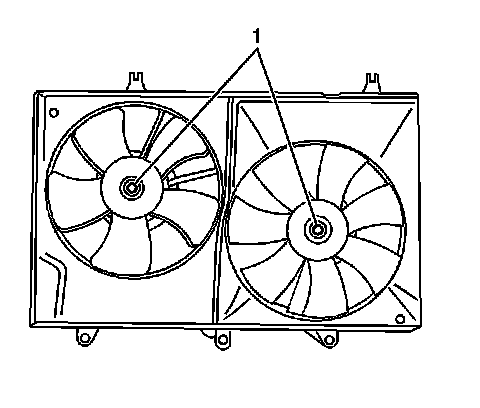
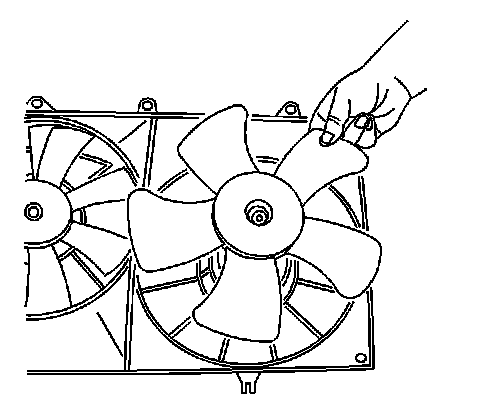
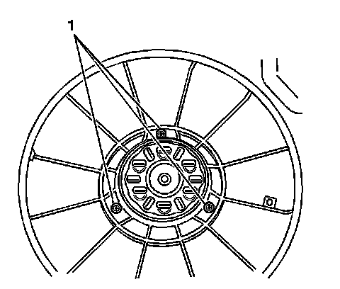
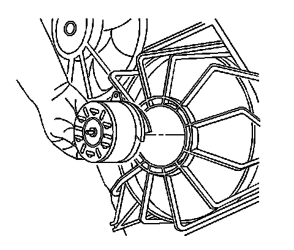

Radiator Cooling Fan Motor: Service and Repair
Engine Coolant Fan Motor Replacement
Removal Procedure
1. Remove the cooling fan assembly. Refer to Engine Cooling Fan Replacement (LH2 - Heavy Duty Cooling) (Service and Repair)Engine Cooling Fan Replacement (LY7 - Gas, 6 Cylinder, 3.6L, SFI, V6) (Service and Repair) .

2. Remove the fan blade retaining nut (1) from the motor.

3. Remove the fan blade from the motor shaft.

4. Remove the motor retaining screws (1).

5. Remove the motor from the shroud.
Installation Procedure
1. Install the motor to the shroud.
Notice: Refer to Fastener Notice .
2. Install the cooling fan motor retaining screws (1).
Tighten the screws to 5 N.m (44 lb in).
3. Install the fan blade to the motor shaft.
4. Rotate the fan until the fan drops onto the shaft.
5. Install the fan blade retaining nut (1) to the motor.
Tighten the nut to 7 N.m (62 lb in).
6. Install the cooling fan assembly. Refer to Engine Cooling Fan Replacement (LH2 - Heavy Duty Cooling) (Service and Repair)Engine Cooling Fan Replacement (LY7 - Gas, 6 Cylinder, 3.6L, SFI, V6) (Service and Repair) .